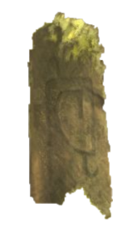
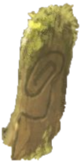
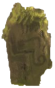

The Sacred Grove
Remember:
Your target number is at the top of the screen.
Each sacred stone has also been assigned a random number that is hidden from you.
You must use the stones to reach the target number without going over in order to open the door and enter the grove.
Target Number
Wins:
Losses:


